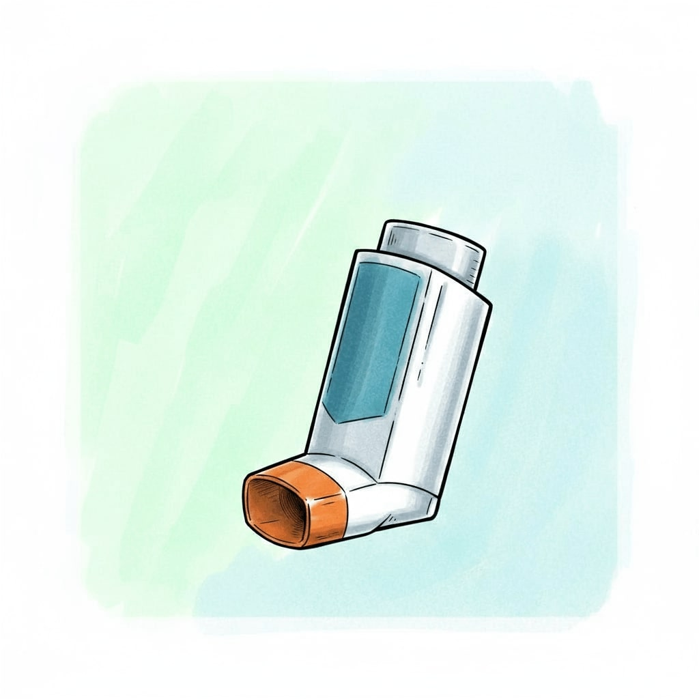
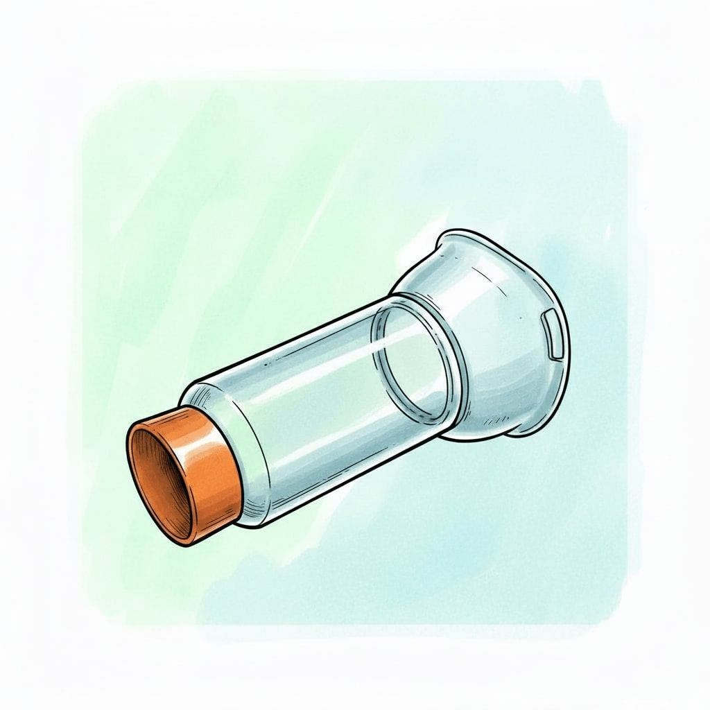
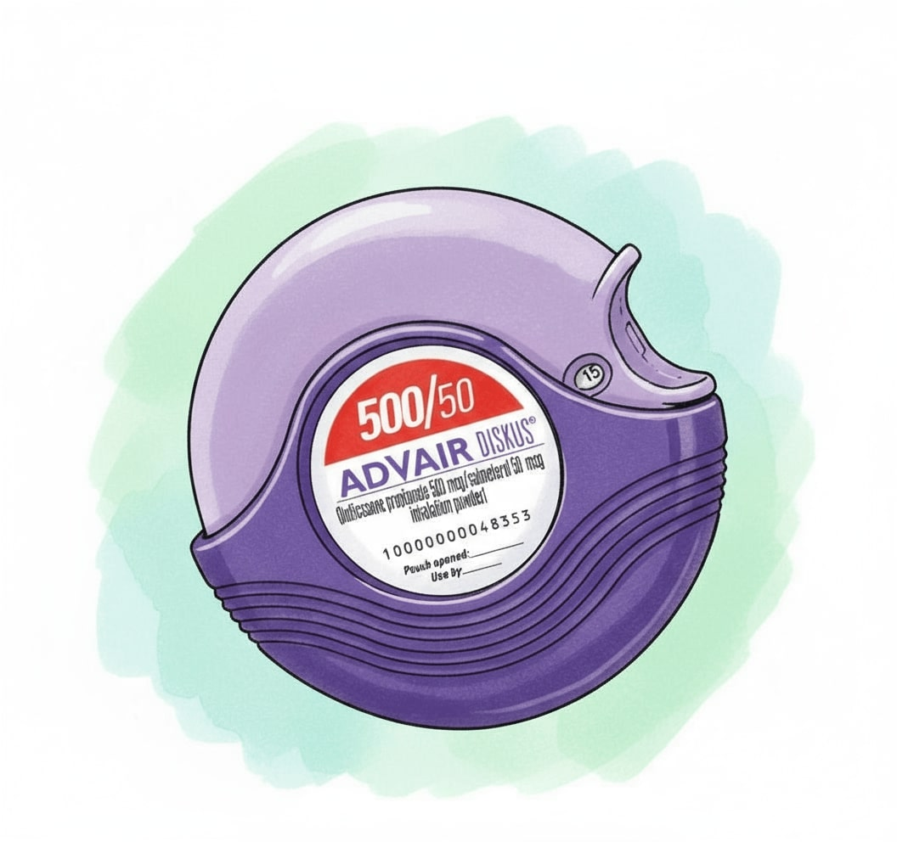
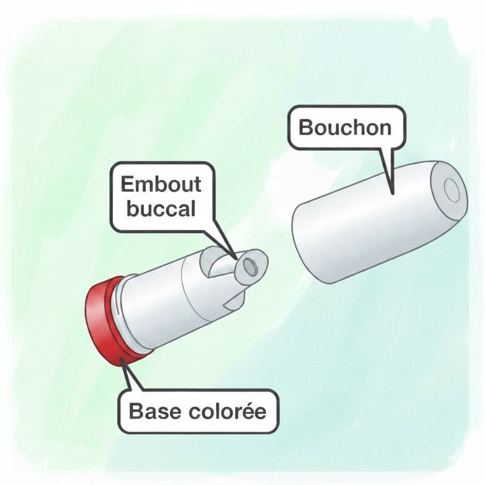

Physiopathologie de l'Asthme
Définition
L'asthme est une maladie inflammatoire chronique des voies respiratoires, caractérisée par des épisodes récurrents d'obstruction bronchique. Cette inflammation entraîne une hyperréactivité des bronches.
Mécanisme Allergique
Chez 80% des asthmatiques, une allergie est en cause. Un contact avec un allergène déclenche la libération de médiateurs par les mastocytes, notamment :
1. Histamine
Libération immédiate, provoquant bronchospasme et inflammation.
2. Leucotriènes
Libérés après 10 minutes, effets bronchoconstricteurs puissants et prolongés.
3. Interleukines
Libérées après plusieurs heures, entretiennent la réaction inflammatoire chronique.
Manifestations Cliniques
Bronchoconstriction
Contraction des muscles lisses des bronches, réduisant le calibre des voies aériennes.
Inflammation & Œdème
L'inflammation de la muqueuse bronchique et un excès de mucus aggravent l'obstruction.
Antihistaminiques H1
Ils bloquent les récepteurs H1 de l'histamine, luttant contre les symptômes de l'allergie. Peu utilisés dans le traitement de fond de l'asthme, ils sont utiles pour les symptômes associés (rhinite, etc.).
1ère Génération
Ex: Dexchlorphéniramine (Polaramine®), Hydroxyzine (Atarax®), Alimémazine (Toplexil®)
Mécanisme
Peu spécifiques, ils passent la barrière hémato-encéphalique (BHE).
Effets principaux
Effet sédatif marqué (somnolence) et effets anticholinergiques (sécheresse buccale, constipation, rétention urinaire).
Précautions
Interactions avec d'autres médicaments atropiniques (antidépresseurs, neuroleptiques...). Attention au glaucome et à l'adénome de prostate.
2ème Génération
Ex: Cétirizine (Zyrtec®), Loratadine (Clarityne®), Desloratadine (Aerius®), Lévocétirizine (Xyzall®)
Mécanisme
Plus spécifiques, ils passent peu la BHE.
Effets principaux
Généralement dépourvus d'effet sédatif et d'effets anticholinergiques significatifs, ils sont mieux tolérés.
Utilisation
Largement préférés pour le traitement des allergies en raison de leur meilleur profil de sécurité.
Bronchodilatateurs β2-mimétiques
Ce sont les bronchodilatateurs les plus efficaces. Ils agissent en relaxant les muscles lisses des bronches. On distingue deux types selon leur durée d'action.
Action rapide et brève (SABA)
Ex: Salbutamol (Ventoline®), Terbutaline (Bricanyl®)
Délai & Durée
Action en quelques minutes pour une durée de 4 à 6 heures.
Indications
Traitement symptomatique de la crise d'asthme et prévention de l'asthme d'effort.
Effets secondaires
Tremblements, palpitations, tachycardie, crampes. Risque d'hypokaliémie à fortes doses.
Action prolongée (LABA)
Ex: Salmétérol (Serevent®), Formotérol (Foradil®)
Délai & Durée
Action en 2h (max) pour une durée de 12 heures.
Indications
Traitement de fond continu, toujours en association avec une corticothérapie inhalée, pour contrôler les symptômes (notamment nocturnes).
Contre-indication
Contre-indiqués avec les bêta-bloquants non sélectifs (même en collyre).
Anti-inflammatoires : Glucocorticoïdes
Les corticoïdes sont de puissants anti-inflammatoires qui constituent la base du traitement de fond de l'asthme persistant. Ils réduisent l'inflammation et l'hyperréactivité bronchique.
Voie Inhalée
Ex: Béclométasone (Becotide®), Budésonide (Pulmicort®), Fluticasone (Flixotide®)
Principe
Traitement de fond de l'asthme persistant. L'action est locale pour minimiser les effets systémiques.
Effets secondaires locaux
Candidose buccale (muguet), raucité de la voix, toux. Il est essentiel de se rincer la bouche après chaque inhalation.
Associations
Souvent associés à un LABA dans un même inhalateur (ex: Symbicort®, Seretide®) pour simplifier le traitement de fond.
Voie Orale / Injectable
Ex: Prednisone (Cortancyl®), Prednisolone (Solupred®), Méthylprednisolone (Solumédrol®)
Principe
Action systémique, réservée aux exacerbations sévères (asthme aigu grave) en cures courtes (3-10 jours) pour éviter les effets secondaires à long terme.
Effets secondaires systémiques
Prise de poids, HTA, hyperglycémie, insomnie, irritabilité, risque d'ostéoporose, fragilité cutanée, insuffisance surrénalienne à l'arrêt brutal d'un traitement long.
Arrêt du traitement
Un traitement long ne doit jamais être arrêté brutalement. L'arrêt doit être progressif pour éviter l'insuffisance surrénalienne.
Autres Traitements de l'Asthme
Antagonistes Muscariniques
Ex: Ipratropium (Atrovent®)
Moins puissants que les β2-mimétiques, ils provoquent une bronchodilatation et diminuent les sécrétions. Ils sont surtout utilisés en nébulisation en association avec un SABA lors des crises sévères.
Méthylxanthines
Ex: Théophylline (Dilantin®)
Effet bronchodilatateur modeste. Son utilisation est limitée par son index thérapeutique étroit (dose efficace proche de la dose toxique) et ses nombreux effets indésirables (digestifs, neurologiques, cardiaques).
Anti-leucotriènes
Ex: Montelukast (Singulair®)
Bloquent les récepteurs aux leucotriènes, réduisant la bronchoconstriction et l'inflammation. Administrés par voie orale, ils sont une alternative aux corticoïdes inhalés à faible dose dans l'asthme persistant léger.
Anti-IgE (Biothérapie)
Ex: Omalizumab (Xolair®)
Anticorps monoclonal administré par voie sous-cutanée. Il cible les IgE et est réservé au traitement de l'asthme allergique persistant sévère non contrôlé par les autres traitements. Prescription initiale hospitalière.
Administration des traitements inhalés
L'éducation thérapeutique du patient est un rôle infirmier majeur. Une bonne technique d'inhalation est cruciale pour l'efficacité du traitement. Il faut s'assurer que le patient maîtrise son dispositif.
Aérosol-doseur

- Secouer l'aérosol.
- Expirer profondément.
- Placer l'embout en bouche et fermer les lèvres.
- Commencer à inspirer lentement et profondément et déclencher la bouffée en même temps.
- Retenir sa respiration 10 secondes.
- Expirer lentement.
- La coordination main-bouche est difficile.
Chambre d'inhalation

Indispensable chez l'enfant et recommandée chez l'adulte, elle élimine le problème de coordination. Le médicament est pulvérisé dans la chambre, puis le patient inspire tranquillement le produit qui y est en suspension.
Après utilisation, rincer la bouche et le visage de l'enfant (si masque).
Inhalateurs de poudre sèche (Diskus®, etc.)

- Ouvrir et armer le dispositif (un "clic" se fait entendre).
- Expirer loin de l'embout.
- Placer l'embout en bouche.
- Inspirer rapidement et profondément. C'est la force de l'inspiration qui délivre le produit.
- Retenir sa respiration 10 secondes.
- Ne nécessite pas de coordination. Un compteur de doses est présent.
Inhalateurs de poudre sèche (Turbuhaler®)

- Dévisser le capuchon.
- Tourner la base colorée dans un sens puis dans l'autre jusqu'au "clic".
- Expirer loin de l'embout.
- Inspirer rapidement et profondément.
- Retenir sa respiration 10 secondes.
- Ne jamais expirer dans le dispositif au risque d'humidifier la poudre.
Quiz Interactif
Testez vos connaissances sur les antiasthmatiques et antihistaminiques.